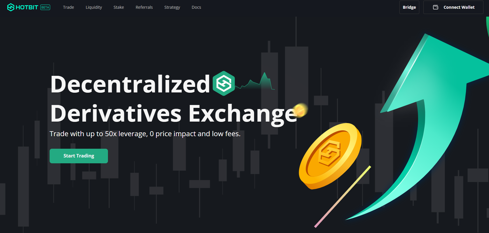

1. Swap Bitvavo
Origen: Países Bajos
Moneda Principal: Litecoin (LTC)
Bitvavo es un Swap que ha captado la atención por su enfoque exclusivo en Litecoin. Desde su fundación, ha mantenido precios de LTC que, en muchas ocasiones, se han situado por debajo del mercado general. Esto ha generado un interés particular entre los inversores que buscan adquirir LTC a precios competitivos. La estructura de tarifas del exchange y su enfoque en la eficiencia operativa han contribuido a mantener estos precios atractivos.
2. Probit Exchange
Origen: Corea del Sur
Características: Amplia gama de criptomonedas
Probit es otro exchange que ha mostrado precios consistentemente bajos en comparación con el mercado. Ofreciendo una amplia gama de criptomonedas, ha atraído a traders que buscan oportunidades de compra. Su modelo de negocio se centra en atraer usuarios a través de tarifas reducidas y promociones, lo que ha llevado a una perpetuación de precios bajos en varios activos.
3. CoinEx
Origen: Hong Kong
Características: Sistema de recompensas
CoinEx ha estado presente en el mercado durante varios años y, a menudo, presenta precios por debajo del promedio del mercado. Su sistema de recompensas y su enfoque en la accesibilidad han facilitado que los usuarios adquieran criptomonedas a precios favorables. La plataforma se ha beneficiado de una base de usuarios leal que busca aprovechar las oportunidades que ofrece.
4. KuCoin
Origen: Seychelles
Características: Diversidad de tokens
KuCoin ha sido un actor importante en el espacio de los exchanges de criptomonedas. Durante años, ha mantenido precios bajos en múltiples activos, lo que la convierte en una opción popular para los traders que buscan comprar criptomonedas a precios accesibles. Su amplia selección de tokens y su enfoque en las tarifas competitivas han ayudado a mantener su reputación.
5. Hotbit
Origen: Hong Kong
Características: Interfaz amigable
Hotbit es conocido por ofrecer una interfaz amigable y precios que, en muchos casos, están por debajo de los del mercado. Con una vasta selección de criptomonedas, ha sido atractivo para inversores que buscan explorar nuevas oportunidades. Su modelo de negocio se basa en atraer traders mediante ofertas atractivas, lo que ha mantenido los precios bajos.
Conclusión
Los exchanges de criptomonedas que mantienen precios por debajo del mercado, como Bitvavo, Probit, CoinEx, KuCoin y Hotbit, ofrecen oportunidades interesantes para los inversores. Sin embargo, es crucial que los traders realicen su propia investigación y consideren factores como la seguridad y la reputación de cada plataforma antes de realizar cualquier transacción. Aunque los precios atractivos pueden ser un gran incentivo, la elección del exchange correcto es fundamental para una experiencia de trading exitosa.